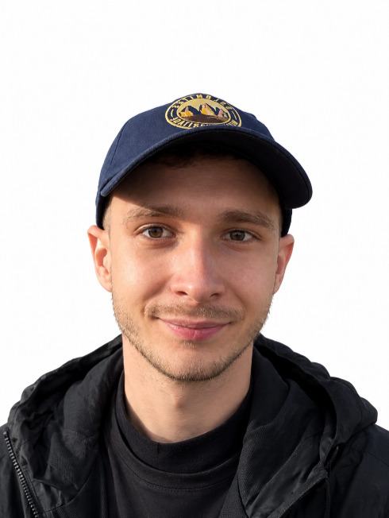

Profil členov tímu
Dorota Pelánová
Vedúca tímu
Študuje aplikovanú informatiku na UCM Trnava a paralelne pracuje v
oblasti administratívy, správy a komunikácie. Má skúsenosti s
tvorbou obsahu, organizáciou projektov a prácou s rôznymi
digitálnymi nástrojmi. V projekte STEP sa zameriava na
dokumentáciu, prípravu textov a koordináciu tímovej spolupráce.

Matúš Horváth
Vývojár logiky aplikácie, integrácií
Jeho obľúbený programovací jazyk je JavaScript, v ktorom vytvoril
napríklad bankový systém s napojením na REST API. Zo školy má
skúsenosti s jazykom C a algoritmami. Momentálne sa zaujíma o
webové aplikácie a ich prepojenie s externými službami. Ovláda
tiež základy HTML, CSS, PHP, MySQL a prácu s Gitom a GitHubom.
Marianna Čápeková
Dizajn a návrh používateľského rozhrania
Má približne osem rokov pracovných skúseností v oblasti IT podpory
a v súčasnosti študuje aplikovanú informatiku. Zaujíma sa o tvorbu
webových stránok, dizajn a návrh používateľského rozhrania. V
projekte STEP uplatní svoje technické znalosti, skúsenosti s
potrebami používateľov a kreativitu pri návrhu funkčného a
vizuálne atraktívneho riešenia.
Dagmar Achsová
Tvorba databáz, testing
Pracuje v oblasti so zameraním na databázy a editovanie obsahu
webových stránok. Ovláda návrh a správu databázových systémov aj
vývoj webových aplikácií. Absolvovala testerský kurz, vďaka
ktorému mám skúsenosti s testovaním softvéru a kontrolou kvality.
Zaujíma sa o kybernetickú bezpečnosť a neustále si rozširuje svoje
odborné vedomosti. Pri tvorbe tejto aplikácie bude jej hlavným
prínosom návrh a implementácia databázy, ako aj testovanie
aplikácie s cieľom zabezpečiť jej správnu funkčnosť a
spoľahlivosť.